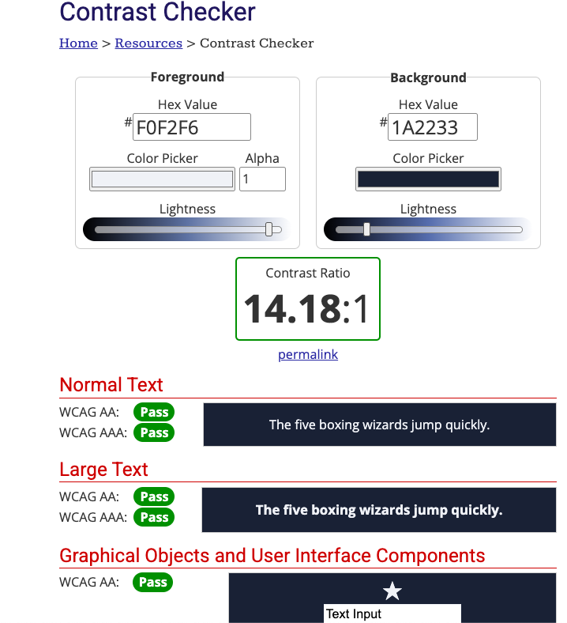
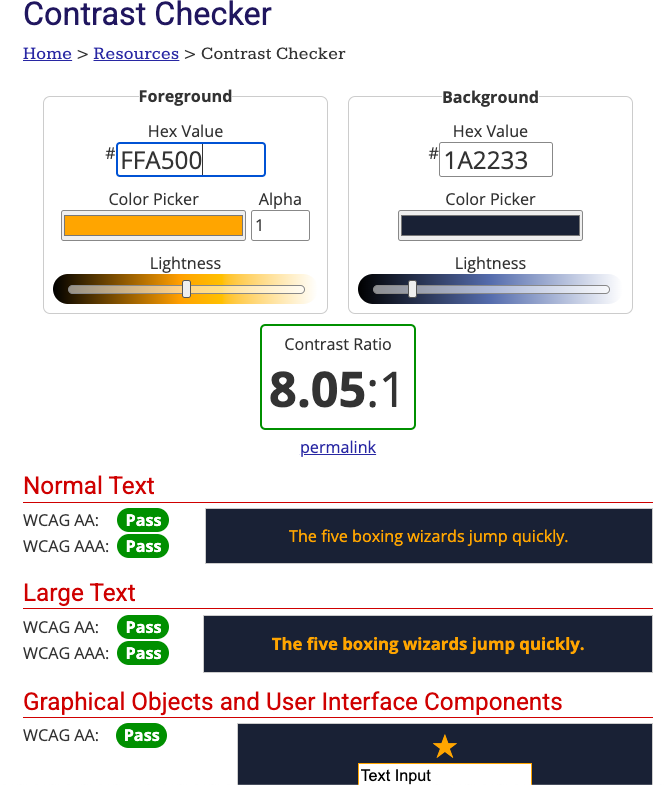

Public cible
Le public cible est les passionnés d'arts, car nous jugeons que le thème et l’information
conviendraient mieux pour eux. Toutefois, peu importe si vous faites partie de ce groupe cible ou
non, nous jugeons qu'il s'agit d'un lieu qui pourrait vous intéresser, et nous vous invitons tout de
même à venir faire un tour et à apprécié ce sujet ainsi que notre site web ! Vous ne serez pas déçu !
Voici où nous sommes situés :
Principe de Répétition
Le principe de répétition repose sur la cohérence des éléments visuels du site web. On parle de plusieus
choses
telles que les images, la police et les couleurs utilisées. Dans notre site web, nous nous sommes
assurés que la
répétition soit bien présente. Nous utilisons la même couleur de fond pour le body #1A2233, la
même couleur
pour le header et le footer #2F3F5C ainsi que la même couleur pour le texte #F0F2F6. Nous
avons aussi
gardé la même police tout le long, cet à dire Monserrat pour le body et Bodoni pour le header. En 2éme
choix, c'est
la police Arial qui sera utilisée. Cette répétition évitera de mélanger l'utilisateur lorsqu'il navigue
et cela
maximisera l'expérience qu'il aura ! Voici des extraits du code CSS pour montrer la répétition des
couleurs et de la police :
body {
background-color: #1A2233;
font-family: 'Montserrat', Arial;
}
header{
background-color: #2F3F5C;
font-family: 'Bodoni', Arial;
}
footer{
background-color: #2F3F5C;
font-family: 'Bodoni', Arial;
color: #F0F2F6;
}
p {
color: #F0F2F6;
font-family: 'Montserrat', Arial;
}
Principe de Contraste
Le contraste est un principe fondamentale dans le design web. Il est important que le contraste soit
bon pour permettre aux utilisateurs de bien voir le contenu du site web. Le contraste est aussi
important pour
les personnes qui ont des problèmes de vision. Il est donc important de bien choisir les couleurs. Pour
ce faire,
il est possible d'utiliser des outils en ligne comme WebAIM Contrast
Checker
pour vérifier le contraste entre les couleurs.
Voici une preuve de notre contraste :


Principe de Proximité
Le principe de proximité est un principe qui permet de regrouper les éléments qui sont liés entre eux. Cela permet de mieux comprendre le contenu du site web sans trop se casser la tête. Comme on peut le voir dans Plan Musée, le principe de proximité est bien respecté. Les images décrivent bien les salles et elles sont proches du texte qui les décrivent, tout en étant en dessous du sous-titre qui montre de quelle salle il s'agit. L'utilisateur n'est pas perdu et il comprend bien que le sous titre, l'image et le texte sont forcément liés.